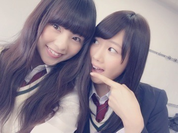
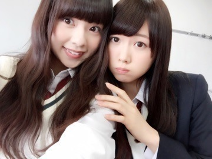

| 2015/04 23 Thu | ソニアカcheckよろし くね♡ and アンダーライブ‼︎ まひろ。 |
おつかれさまです♡
まにだよ？ ろってぃーだよ？
まだblogでちゃんと言ってなかったかも...。
ソニー・ミュージックが立ち上げた、「ソニアカWEBボーカルトレーニング」というのが始まりまして、
その生徒役として レッスン動画に出ています！
是非、checkしてくださいね♡
みんなで歌うまくなりましょー♩にひひ。
そしてそして、アンダーライブ3rdシーズンについて...。
の前に らりんとの写メを貼っちゃえ貼っちゃえ♡わら
らりん大好き！

元気ならりんが、
好き！

これは、、
ヤンジャンさんの表紙撮影の日！

笑...。
アンダーライブ3rdシーズン無事走り切りました！！
リハーサルが進んでいく中、私含め5人は「乃木團」で台湾に行ってたため参加できなくて、、
５人で『やばいよやばいよ( ；´Д｀)』どうなることかと思ってたのですが、、
ま！今となっては、笑い話です♡
まあ 頑張って良かった。。笑
今回のLIVEは、「ノンストップLIVE！」そして、「全力LIVE！」がテーマでした！
ということで、MCはアンコールが終わるまで1回も挟まず！。。。
ソロダンスTIMEでは、踊り出しから皆さんが「Fu～Fu～」って煽ってくださるから、とっても嬉しかったです♡
ありがとう.＊
千秋楽では『君の名は希望』の前に、私.あやね．らりんが皆さんの前で、お手紙を読ませて頂きました。
私は、過去の話をしました。
私の気持ちが少しでも伝わっていたら嬉しいな。と思います。。
そしてらりんとのツーショットを沢山貼った理由は、『らりんが私に感謝しているよ。』っていう話をファンの皆さんが伝えてくれたからです。
らりんには、前回のLIVEでも本当にいっぱい頼ってしまったし、助けられたので、
らりんが苦手なことは、全力で支えてあげたいな♡！とずっと思っていたので、
らりんに「まひろには本当に感謝してる。」って言われた時は、本当に嬉しかったよ（＾ω＾）
これからも支えて合っていこーね！
うちらの仲やけんな♡！
という感じでもっと写真載せたいのですが、５枚までらしいので。。（ ｉ _ ｉ ）
ファンの皆さん、
スタッフの皆さん、メンバー、本当にありがとうございました！
～～～～～～～～～～～～
まあや、お誕生日おめでとう( ´ ▽ ` )ﾉ
まひろがもしメンバーやなくて乃木坂46のファンだったら、絶対まあや推しになってたと思います。
まあやの好きなところはいっぱいあるよ♩
嫌いなところなんて無い！
まあや、、何でも頼ってね♡
～～～～～～～～～～～～
以上。
コメント(283)
2015/04/23 17:06